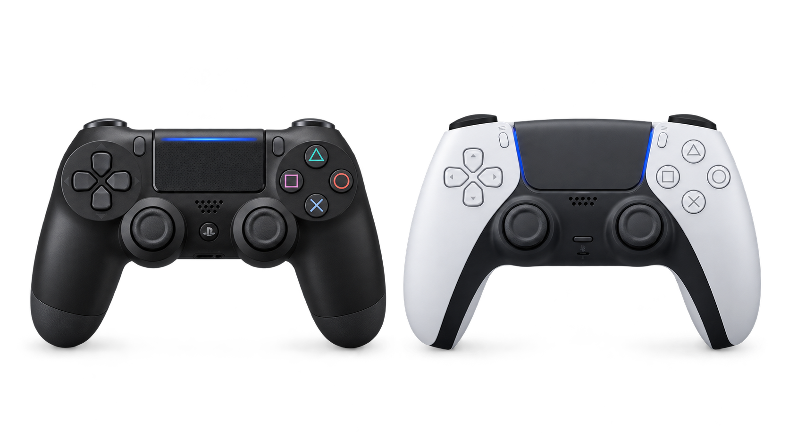

何で遊ぶ？
PC、Switch、PS5など、使いたい機種に対応しているか確認。機種によっては有線接続でも使えない場合があります。
コントローラー選びガイド
PS4・PS5の純正コントローラーを比較。プレイスタイルに合った一台を見つけて、ゲーム体験をもっと快適に。
コントローラーを探す ↘※当サイトにはアフィリエイト広告が含まれる場合があります。

まずはここから
価格だけでなく、対応機種と遊び方を先に決めると失敗しにくくなります。
PC、Switch、PS5など、使いたい機種に対応しているか確認。機種によっては有線接続でも使えない場合があります。
FPSならスティックや背面ボタン、アクションなら持ちやすさ、複数機種なら接続方式も比較しましょう。
手頃な入門機から、調整機能や追加ボタンを備えた上位モデルまで。必要な機能に予算を使うのがコツです。
目的から探す
注目モデル
価格・在庫・対応機種は変動します。購入前に販売ページで最新情報をご確認ください。
WindowsやXboxで使う候補。購入前に接続方式と対応機種を確認。
Switch向けの純正コントローラー候補。対応機種・機能は公式情報で確認。
複数のシリーズがあるため、対応機種・ボタン配置・接続方式を型番ごとに比較。
重要：上記リンクは初期サンプルです。公開前に各ASPで発行した自分専用のアフィリエイトリンクへ差し替えてください。Amazonのリンクは現状、商品ページへの専用リンクではありません。
あなたにぴったりのコントローラー
対応機種、接続方式、機能の違いを確認して、納得できる1台を選ぼう。
コントローラーの選び方を読む ↗